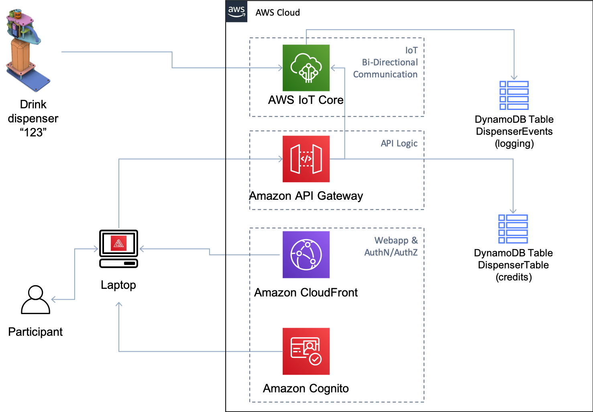

1. Architecture Overview
Objectives
In this initial lab, we will go through the overall architecture of the CDD. At the end of the lab, you will come away with the understanding of:
- The cloud components for interacting with the dispenser
- How user accounts, things, and database entries are interrelated
- How the dispenser updates local status ands responds to dispense commands
Steps to Complete
1. Overall Cloud Architecture

When interacting with the cloud, the CDD utilizes two main paths, AWS IoT Core for MQTT communication and then a webapp with authentication to interact with the device and supporting databases.
- IoT Bi-Directional Communication - This section uses MQTT to communicate bi-directionally between the AWS cloud and the device. We also use MQTT to notify the webapp user when there have been activities. This eliminates the need for constant polling and only to query via API when there is information to update.
- API Logic - Most operations are completed via API calls. By using user authentication, each call can be verified to the specific dispenser via the AWS Lambda functionality.
- Webapp and Authentication/Authorization - This uses Amazon Cognito to authenticate users and provide a Jason Web Token (JWT) with signed attributes such as the corresponding drink dispenser id. The vended credentials are then use to make API calls and to establish a persistent connection to AWS IoT.
2. User and Dispenser Relationships

For each individual user, there is a set of resources created and related during the user account creation process. A user, foo, authenticates with Cognito and is returned a signed JWT that contains information used by the webapp and API Gateway. For instance, user foo is associated with dispenserId of 123. Any API calls made use the dispenserId attribute to ensure that requests are only for the user’s dispenser and not someone elses. The value is also used to send and receive messages on specific MQTT topics so that one dispenser cannot be affected by another dispensers actions. This is a common field used throughout the backend cloud services.
3. Dispenser Operations

Your dispenser will only use MQTT to communicate with the cloud services. There are two main methods that a device uses to communicate. The first is through regular topics such as telem/123 where the device can subscribe to receive messages, or it can publish messages directly to the topic. In this case, telem indicates telemetry and normally would be messages sent from the device to the cloud.
For this workshop. we actually will use the shadow set of topics. This is a provided service of AWS IoT that tracks the state of a device. Each device has both a desired and reported state. It is common that cloud services would set the desired state, and the next time the device is online, it would read those values, set them locally, and update the reported state accordingly.
A device can also use the delta state that tracks the difference between desired and reported states.
The shadow document will look similar to this:
{
"desired": {
"led_ring": {
"count": 0,
"color": "#FF00FF"
},
"led": "on",
"dispense_time_ms": 4000,
},
"reported": {
"led_ring": {
"count": 0,
"color": "#FF00FF"
},
"led": "off",
"dispense_time_ms": 2500,
},
"delta": {
"led": "on",
"dispense_time_ms": 4000
}
}In this example, there are two values that have been requested to be changed, led and dispense_time_ms, as reported by the delta state.
Finally, there are AWS IoT Rules that are triggered upon the content of messages published. In the diagram above, the IoT rule is triggered when the shadow document changes, passing the details to a Lambda function that will write this to the Events database table.
Checkpoints
This module provides a high-level description of the various components used in the workshop. After completing this lab, you should have an understanding of:
- The differences between the physical dispenser and the webapp used to monitor and control it
- How Cognito and API Gateway are used by the webapp to issue commands or actions
- How the Dispenser uses MQTT for bi-directional command and control of the device using the Shadow service
- The differences between the Shadow document states (desired, reported, and delta)
As this lab is informational only, there are no specific checkpoints that need to be completed.